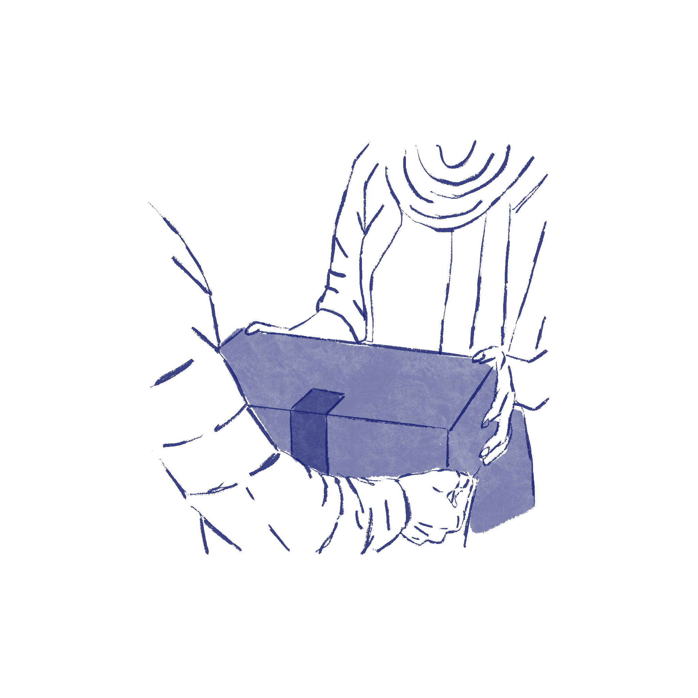
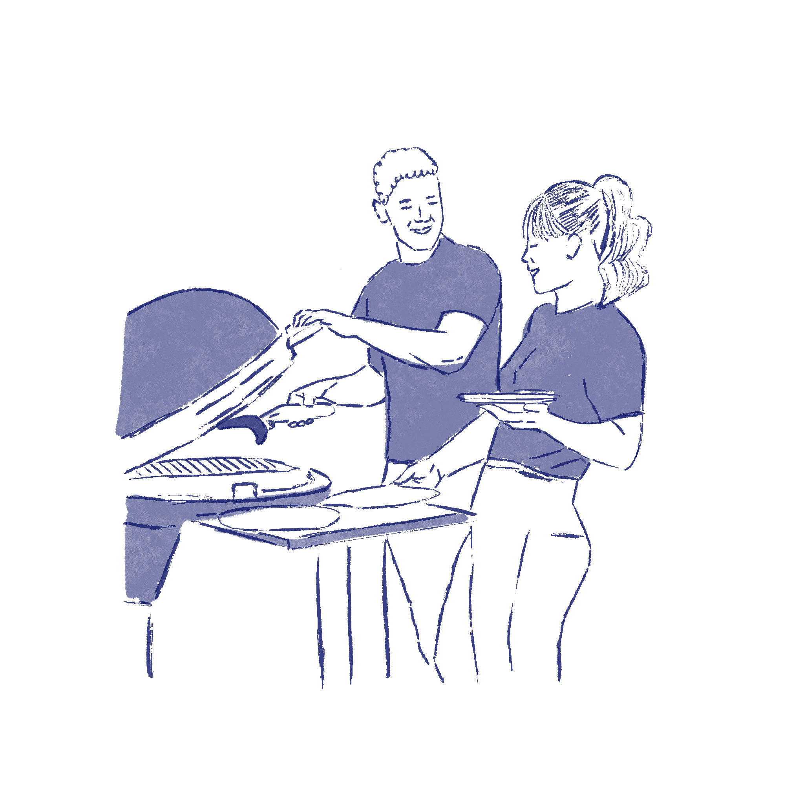
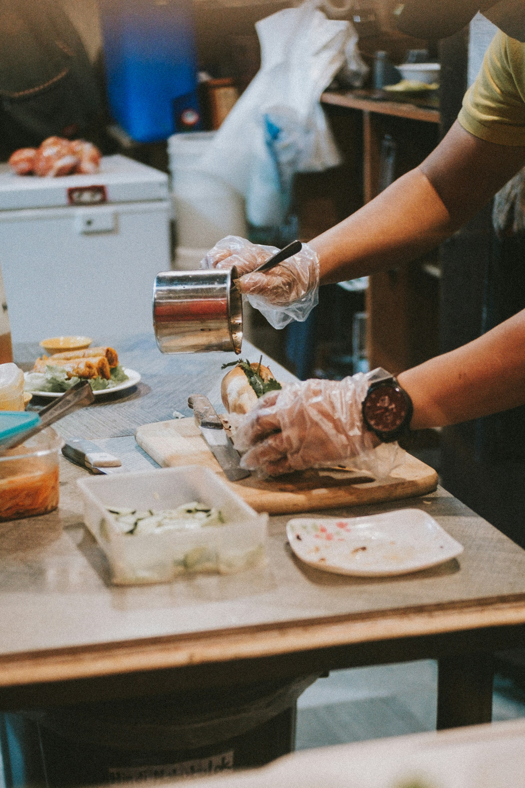

lokal
lokal
 kvalitet
kvalitet
 god smag
god smag

Produkter

Grillmenuer
Tilbehør
Vegetarpølser
Lavet med kærlighed
God smag
Ingen tilsætningsstoffer
Lokale råvarer


1
Friske råvarer
Produkter er lavet fra bunden med omtanke
2
Pakket med omtanke
Dine varer vakuumpakkes, med levering i hele landet
3
Frisk levering
Leveret direkte til døren, og klar til brug
4
Velbekomme
Tænd grillen og nyd maden med familie og venner

Historie & mission

Det hele startede med Farmors hjemmelavede pølser i Shanghai. Nu tilbyder vi i Danmark et bredt udvalg med smag og tradition.
LÆS MERE

Events

Vi serverer pølser og tilbehør til fester og events – op til 120 personer.
Lad os tage os af maden, så du kan nyde festen.


BOOK